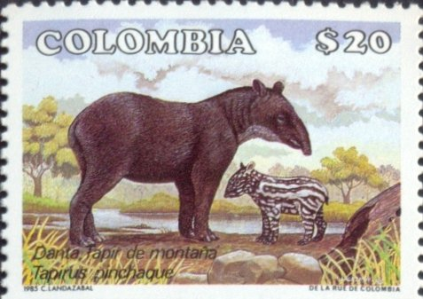

Sobre Puracé
Declarado por la UNESCO como Reserva de la Biosfera en 1979, el Parque Nacional Natural Puracé es una zona volcánica y lo refleja tanto en sus numerosas fuentes azufradas como en su nombre, que en lengua quechua significa “montaña de fuego”. Allí nacen los principales ríos de Colombia: Magdalena, Cauca, Patía y Caquetá y también 30 lagunas tranquilas y claras, ideales para la contemplación.
Con una temperatura de entre 3 a 18 grados en promedio.
compuesta por 11 volcanes. De éstos los mas destacados son el Pan de Azúcar (5.000 msnm), el Puracé (4.780 msnm) el único activo, y el Coconuco (4.600 msnm). A comienzos de siglo XX, toda la Serranía permanecía nevada; actualmente, ni siquiera el cerro más alto, el Pan de Azúcar, conserva nieve. Dicen los indígenas que el hacha de los blancos ahuyento a “Jucas” el dueño de la nieve y el granizo.
Nuestro recorrido
El parque nacional natural Puracé se encuentra en la reserva de biosfera del cinturón andinon
Collage
Dalia imperial

Frailejon
Orquidea (epidendrum megalospathum)
Cimarrona (Bomarea)
Esto es una flor
Esto es una flor
Esto es una flor